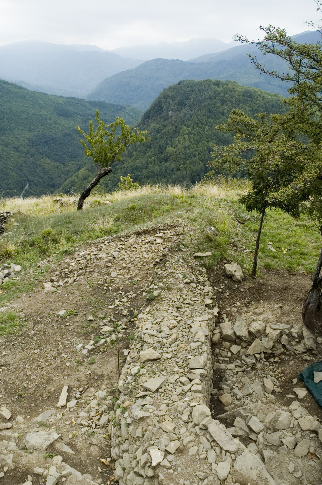

Castelluccio
Il poggio sulle cui pendici si è sviluppato il paese di Lancisa prende il nome di Castelluccio, per la presenza di un’antica struttura fortificata, indagata da scavi archeologici e ricordata dai documenti d’archivio, tra i quali il componimento di un alunno della scuola elementare di Lancisa dell’anno 1929, conservato nella Biblioteca Comunale Forteguerriana di Pistoia.
"Da Lancisa si vede un monte che si chiama il Castelluccio e un altro che si chiama Castello. Al Castelluccio e in cima al Castello ci sono delle fosse fonde. Prima c’erano le fortezze. Quando facevano la guerra ci combattevano."
Lancisa Dizionario geografico fisico storico della Toscana di Emanuele Repetti,1841